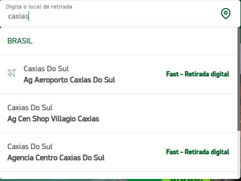
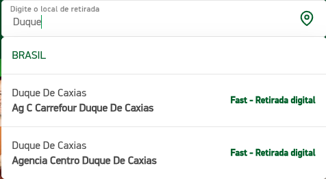

Configurações
Opções
Como preencher filial?
O campo de filial é separado em dois: empresa (esquerda) e filial (direita)
Na esquerda, selecione a empresa alvo. À direita, o nome da filial de forma que seja a primeira no autocomplete do site. Se lembre que ele navega no site e coloca exatamente o texto informado.
Por exemplo, se você quiser a agência da localiza centro de duque de caxias, você terá diversas opções. Mas perceba que, se o
campo for preenchido com:
1. "caxias" - Será selecionado o Aeroporto Caxias do Sul

2. "Duque" - Será selecionado a agência Carrefour Duque de Caxias

3. "centro Duque" - Será selecionado, por fim, o correto.

Análise na planilha?
Caso for selecionado, do lado das cotações, adicionará um campo de análise na planilha, contendo informações como grupos com maior diferença, a porcentagem e o valor.
Não incluir se Localiza não tiver?
Caso for selecionado, será desconsiderado (das outras empresas) todos os grupos que a localiza não tem.